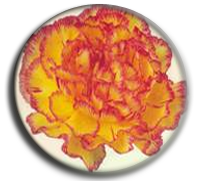
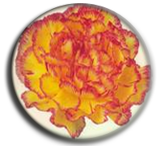

PINK DONA
TUNDRA
WHITE TUNDRA
| CARNATION (Dianthus Spp) Caryophyllaceae |
Varieties
Standard Types
Red- Domingo, Master, Gaudina, Leopardii, Big Red, Taureg, Guapo, Aicardii
White- Baltico, White Liberty, Emotion, White Dona, Lisa
Pink- Dona, Charmant, Dumas, Pink Dover, Bizet
Light pink - Charmant, Cipro Big Mama, Dona, Golem
Yellow - Diana, Kiro, Soto, Salamanca, Liberty
Orange - Solar, Star, Folgore
Double - Malaga, Star, Athena, Happy Golem
|
 |
|
PINK DONA |
TUNDRA |
WHITE TUNDRA |
Spray Types Red- Red Eye, Red Fuego, Red Vital, Aveiro |
 Spray types |
Season
It can be cultivated throughout the year as it is grown under controlled conditions.
Propagation and Planting
Plantlets/suckers can be used for planting. The terminal cuttings of 5-10 cm are treated with NAA at 500 ppm for 5 minutes to induce rooting. Cuttings are dipped in Carbendazim 2g/lit solution. Raised beds at 3 feet width and 45 cm height are formed at 45 cm interval and planting is done on top of the bed at 15 x 15 cm spacing. The cuttings normally develop good root system within 21 days.
| Fumigation - Dazomet @ 30g/m2 or H2O2 @ 300 ml/m2. Bed size:100 cm width, 30 cm height, convenient length with 40 cm foot path. Spacing: 6 row planting - 15x15 cm (25 plants/m2). 4 row planting - 15x15cm (22 plants/m2) . Irrigation: Drip system with drippers at 30 cm spacing (5-6 l/m2/day). Growing condition – Day temperature 20-25oC Night temperature 10-15oC Critical photoperiod 13 hours RH 50-60% |
| Planting method in carnation | |
| Nutrients | Quantity (g/m2/week) | |
| Till bud formation | Bud formation to harvest | |
| Tank-A (Monday and Thursday) | ||
| Ammonium Nitrate | 3.0 g | 2.0 g |
| 19:19:19 | 3.0 g | 2.0 g |
| Magnesium Sulphate | 2.5 g | 2.5 g |
| Boron | 1.0 g | 1.0 g |
| Trace elements / micronutrients | 1.0 g | 1.0 g |
| Tank – B (Tuesday and Friday) | ||
| Potassium Nitrate | 5.0 g | 5.0 g |
| Calcium Nitrate | 8.0 g | 9.0 g |
Special practices
Netting for plant support: 4 layers
1st layer : 7.5 x 7.5 cm
2nd layer : 10 x 10 cm
3 rd layer : 12.5 x 12.5 cm
4 th layer : 15 x 15 cm
| Netting practice in carnation | |
Support Material
Carnation crop has the tendency to bend unless supported properly. Hence the crop needs support while growing. Good support material is metallic wire woven with nylon mesh. At every two meters the wire should be supported with poles. The poles at both the ends of bed should be strong. Metallic wire is tied around the bed along the length with the support from supporting poles. Across the bed, nylon wires are woven like net. For an optimum support, an increasing width of the meshes can be used. Bottom net can be of 10x10cm, then two nets of 12.5x12.5cm and the upper most can be 15x15cm.
Pinching

Pinching in Carnation
Disbudding
In standard carnations, side buds should be removed whereas in spray carnations, the terminal bud has to be removed.
Irrigation
Irrigation is provided with drip system once in 2-3 days according to soil moisture to maintain water holding capacity at 60% to 65%. The optimum water requirement of the crop is 4-5 lit/m2/day
Manuring
Neem cake 2.5 ton/ha, Phosphorus 400 g/100 sq.feet and Magnesium sulphate 0.5kg/100 sq.feet are applied as basal.
| Field overview in different stages of crop | |
|---|---|
 |
|
Plant Protection
Damage symptom Both the nymphs and adults suck the sap from leaves and flower. They excrete brown droplets, which afterwards true black. Leaves may fade and shrivel in case of heavy infestation and foliage becomes silvery. Control measures Spraying of Fipronil 1.5 ml/lit (or) Imidachloprid 2ml/litre or Dimethoate 30 EC @ 1ml/litre.
Red spider mites-Tetranychus urticae Damage symptom
Control
Bud borer – Helicoverpa armigera
Fusarium wilt: Soil drenching with Carbendazim @ 0.1 % or Difenoconazole @ 0.05 %orPseudomonas fluorescens as soil application @ 25 g/m2 and foliar application @ 0.5 % at monthly intervals orsoil drenching with Bacillus amyloliquefaciens @ 0.5 % at monthly intervals |
Fusarium wilt
Grey Mould rot
Disorder
Calyx Splitting
Cultivars with too many petals are susceptible to calyx splitting. Varying temperature and environmental conditions also influences calyx splitting. The calyx may split down either half or completely. The petals are deprived of their support, which results in bending down of petals. Thus, the regularity of shape and structure of the flower get destroyed. Selection of cultivars like Epson, Palmir etc. that are less prone to splitting, regulation of temperature and maintenance of optimal fertilizer level can minimize this disorder. This can also be reduced by placing a rubber band or 6mm wide clear plastic tape is used around the calyx of the flowers which are just start opening.
Curly tip
This disorder affects the growing tips which curl and become distorted. Tips of the young shoots fail to separate and continuation of growth results in a characteristic curvature. Poor light and other adverse conditions are thought to be the causes of the disorder. Water stress and potassium deficiency are suspected causes for a physiological curly tip and die-back of carnation flowers.
Season of Flowering development and Harvest
Flower starts after 4 months of planting and continues up to one and half years. Standard carnation flowers are harvested when the outer petals unfold nearly perpendicular to the stem. Spray types are harvested when two flowers open and the remaining buds show colour. Daily harvest is made leaving bottom 5 nodes of stalk to facilitate side shoot development.
Post harvest Treatment
Citric acid is added to water to make the pH 4.5 to 5 and 5 mg of Sodium hypochloride is added to 1 litre of water. Cut flower stalk is soaked in this solution for 4 – 5 hours to improve vase life.
After harvest, the flower stems have to be trimmed at the base and should be immediately placed in a bucket of preservative solution of warm and deionized water. A good preservative solution for carnations should be acidic (pH 4.5) with 2-5% sucrose and a biocide not phytotoxic to carnations. After keeping in preservative solution for 2 to 4 hours, flowers should be placed in a refrigerated room at 0-2°C for 12-24 hours. The flowers can be stored for two to four weeks before marketing. For this, the flowers have to be packed in cartons lined with polyethylene film. These cartons should have sufficient vent holes. The full cartons should be pre-cooled with out lid. The plastic is then loosely folded on top of the stems and the lid is closed. These cartons are stored in cool chambers designed to maintained 0°C with good air circulation and a constant relative humidity of 90-95%.
Grading
Based on stem thickness, stem length and quality of flower grading is done as A, B, C, D.
Yield
The average yield is about 8 Stalks/plant/year

Grading and packing in carnation
*Precision production techniques for carnation
| S.No. | Cultural Practice |
Recommendation |
| 1. | Fumigation | Dazomet @ 30 g/m2 |
| 2. | Media consortium | 10:1:1 ratio of 30 kg/m2of consortium with 25 kg of Farm Yard Manure, 2.5 kg of vermicompost, 2.5 kg of cocopeat with the biofertilizers Azospirillum, Phosphobacteria, VAM and the biocontrol agents Trichoderma viridae, Pseudomonas fluorescens each @ 20 g/m2 at bimonthly intervals |
| 3. | Planting density | 15 x 15 cm with 25 plants/m2 |
| 4. | Planting stage and pinching level | 30 day old rooted cuttings and single pinching at the 5th node |
| 5. | Precooling | 4oC for 4 hours |
| 6. | Pulsing solution | Sucrose 10 % + Citric acid 100 ppm + 8-Hydroxy Quinoline 400 ppm for 24 hours duration |
| 7. | Holding solution | Sucrose 5% + Citric acid 50 ppm + Benzyl Adenine 75 ppm |
| 8. | Wrapping and packaging techniques | Polyethylene sleeves 50 gauge thickness + CFB with 4 % vent |